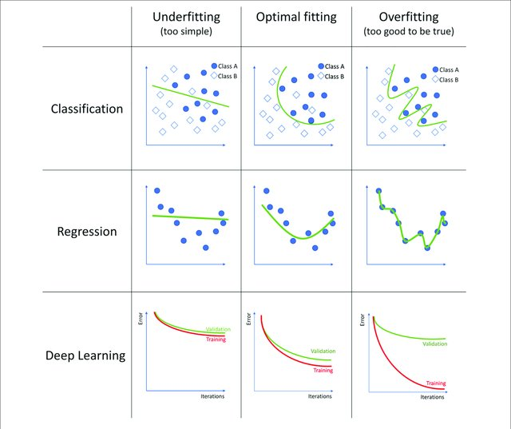

ML - Model Selection
Contents
ML - Model Selection#
Now, we have to asssess our models in order to use the best one. We already know that a random model is not the best one, even a model who predict the mean (regression) or the most common label (classification) is too simple. So, why not use a model that memorizes all the features and their label? This is not a good idea, because the algorithm won’t be able to predict new samples.
These concepts are called Underfitting and Overfitting respectively.

The bias–variance dilemma or bias–variance problem is the conflict in trying to simultaneously minimize these two sources of error that prevent supervised learning algorithms from generalizing beyond their training set.

{kind=link}
We can use the MSE for illustrating this, for a given input \(x\) and the real target value \(y\), we can decompose into the sum of the variance of \(\hat{f}(x)\), the square bias of \(\hat{f}(x)\) and the variance of the error \(\epsilon\). That is,
since \(E[\epsilon]=0\) (recall that it is a white noise).
For summarize,
The bias error is an error from erroneous assumptions in the learning algorithm. High bias can cause an algorithm to miss the relevant relations between features and target outputs (underfitting).
The variance is an error from sensitivity to small fluctuations in the training set. High variance may result from an algorithm modeling the random noise in the training data (overfitting).
Cross-Validation#
Learning the parameters of a model function and testing it on the same dataset is a methodological mistake. To avoid this, a common practice is when performing a (supervised) machine learning experiment to keep part of the data available as a test set. Here is a flowchart of the typical cross-validation workflow in model training.

scikit-learn and others machine learning libraries have implemented functions for split your dataset in train and test sets. Let’s use a Breast Cancer dataset as an example.
from sklearn.datasets import load_breast_cancer
X, y = load_breast_cancer(as_frame=True, return_X_y=True)
X.shape, y.shape
((569, 30), (569,))
X.head()
| mean radius | mean texture | mean perimeter | mean area | mean smoothness | mean compactness | mean concavity | mean concave points | mean symmetry | mean fractal dimension | ... | worst radius | worst texture | worst perimeter | worst area | worst smoothness | worst compactness | worst concavity | worst concave points | worst symmetry | worst fractal dimension | |
|---|---|---|---|---|---|---|---|---|---|---|---|---|---|---|---|---|---|---|---|---|---|
| 0 | 17.99 | 10.38 | 122.80 | 1001.0 | 0.11840 | 0.27760 | 0.3001 | 0.14710 | 0.2419 | 0.07871 | ... | 25.38 | 17.33 | 184.60 | 2019.0 | 0.1622 | 0.6656 | 0.7119 | 0.2654 | 0.4601 | 0.11890 |
| 1 | 20.57 | 17.77 | 132.90 | 1326.0 | 0.08474 | 0.07864 | 0.0869 | 0.07017 | 0.1812 | 0.05667 | ... | 24.99 | 23.41 | 158.80 | 1956.0 | 0.1238 | 0.1866 | 0.2416 | 0.1860 | 0.2750 | 0.08902 |
| 2 | 19.69 | 21.25 | 130.00 | 1203.0 | 0.10960 | 0.15990 | 0.1974 | 0.12790 | 0.2069 | 0.05999 | ... | 23.57 | 25.53 | 152.50 | 1709.0 | 0.1444 | 0.4245 | 0.4504 | 0.2430 | 0.3613 | 0.08758 |
| 3 | 11.42 | 20.38 | 77.58 | 386.1 | 0.14250 | 0.28390 | 0.2414 | 0.10520 | 0.2597 | 0.09744 | ... | 14.91 | 26.50 | 98.87 | 567.7 | 0.2098 | 0.8663 | 0.6869 | 0.2575 | 0.6638 | 0.17300 |
| 4 | 20.29 | 14.34 | 135.10 | 1297.0 | 0.10030 | 0.13280 | 0.1980 | 0.10430 | 0.1809 | 0.05883 | ... | 22.54 | 16.67 | 152.20 | 1575.0 | 0.1374 | 0.2050 | 0.4000 | 0.1625 | 0.2364 | 0.07678 |
5 rows × 30 columns
y.value_counts()
1 357
0 212
Name: target, dtype: int64
Then to split in train and test sets is really simple
from sklearn.model_selection import train_test_split
X_train, X_test, y_train, y_test = train_test_split(X, y, test_size=0.25, random_state=42)
X_train.shape
(426, 30)
X_test.shape
(143, 30)
Now, let’s fit a model with the training data (learning process).
from sklearn.ensemble import RandomForestClassifier
model = RandomForestClassifier(random_state=42)
model.fit(X_train, y_train)
print(f"Train set accuracy: {model.score(X_train, y_train)}")
print(f"Test set accuracy: {model.score(X_test, y_test)}")
Train set accuracy: 1.0
Test set accuracy: 0.965034965034965
Notice the partition was done randomly, then the test score could be highly influenciated by this random partition (seed). Here is when we will introduce one of the most used and classical cross-validation technique, called k-fold. It consists in to partitionate the dataset in \(k\) different partitions (folds) and then repeat \(k\) times the usual workflow, but using \(k-1\) folds as training dataset and then validate (compute the score) with the remaining part (test dataset).
Again, this can be easily done with scikit-learn built-in functions
from sklearn.model_selection import cross_validate
model = RandomForestClassifier()
cv_results = cross_validate(model, X, y, cv=5)
cv_results.keys()
dict_keys(['fit_time', 'score_time', 'test_score'])
cv_results['test_score']
array([0.92982456, 0.94736842, 0.97368421, 0.97368421, 0.95575221])
score_mean = cv_results['test_score'].mean()
score_std = cv_results['test_score'].std()
print(f"{score_mean:.2%} accuracy with a standard deviation of {score_std:.2%}")
95.61% accuracy with a standard deviation of 1.66%
Hyper-Parameters#
As we know, some algorithms have parameters that are not trainable, for example regularization parameters in Ridge or Lasso regression, or the number of estimators (trees) in Random Forest models. We can use Cross-Validation for finding the best hyper-parameters for the problem we are working on.

from sklearn.model_selection import GridSearchCV
parameters = {
"n_estimators": [10, 100, 1000],
"max_features": ["sqrt", "log2"]
}
model = RandomForestClassifier()
clf = GridSearchCV(model, parameters, cv=5)
clf.fit(X_train, y_train)
GridSearchCV(cv=5, estimator=RandomForestClassifier(),
param_grid={'max_features': ['sqrt', 'log2'],
'n_estimators': [10, 100, 1000]})In a Jupyter environment, please rerun this cell to show the HTML representation or trust the notebook. On GitHub, the HTML representation is unable to render, please try loading this page with nbviewer.org.
GridSearchCV(cv=5, estimator=RandomForestClassifier(),
param_grid={'max_features': ['sqrt', 'log2'],
'n_estimators': [10, 100, 1000]})RandomForestClassifier()
RandomForestClassifier()
clf.best_params_
{'max_features': 'sqrt', 'n_estimators': 100}
clf.score(X_test, y_test)
0.972027972027972
Remark: This approach requires to train several times a model. When this is not possible (time, computational resources, etc.) it is usual to try a slightly different approach. Instead of split the data into two partitions this will be split into three subsets.
Training Dataset: The sample of data used to fit the model.
Validation Dataset: The sample of data used to provide an unbiased evaluation of a model fit on the training dataset while tuning model hyperparameters.
Test Dataset: The sample of data used to provide an unbiased evaluation of a final model fit on the training dataset.